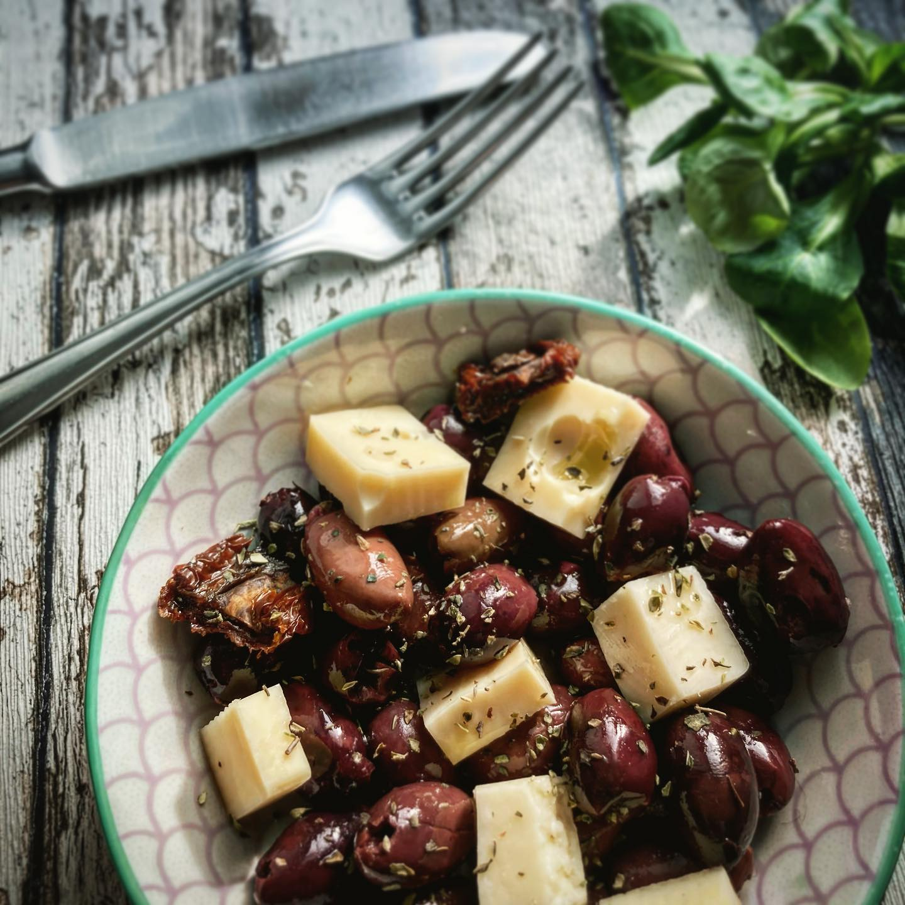

Olivy podľa @svetoliv.cz — Normy Jedál
Věděli jste, že se doporučuje olivy lehce propláchnout, zakápnout oliváčem a až pak servírovat na stůl? My doporučujeme ještě trošku posypat oreganem. Ale nebudem lhát. Někdy je jíme rovnou ze sklenice na stojáka u lednice. Třeba když se dítě zrovna nedívá. Jíte takhle doma něco na tajňáka?